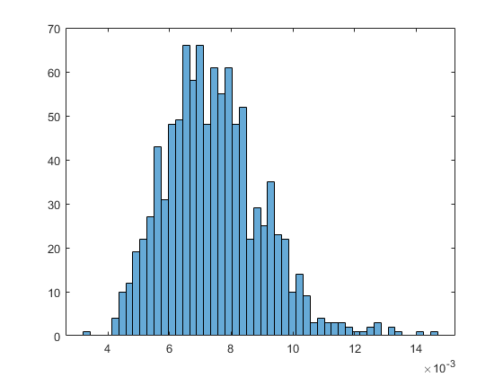

TutorialCantileverBeam: Model Definition and Uncertainty Quantification
This script run the Cantilever Beam Tutorial in the COSSAN-X Engine The documentation and the problem description of this example is available on the User Manual -> Tutorials -> Cantilever_Beam
See Also: http://cossan.cfd.liv.ac.uk/wiki/index.php/Cantilever_Beam
Copyright 2006-2014: COSSAN working group
Author: Edoardo-PatelliInstitute for Risk and Uncertainty, University of Liverpool, UK
COSSAN web site: http://www.cossan.co.uk
This file is part of openCOSSAN. The open source general purpose matlab toolbox for numerical analysis, risk and uncertainty quantification (http://www.cossan.co.uk).
openCOSSAN is free software: you can redistribute it and/or modify it under the terms of the GNU General Public License as published by the Free Software Foundation, either version 3 of the License. openCOSSAN is distributed in the hope that it will be useful, but WITHOUT ANY WARRANTY; without even the implied warranty of MERCHANTABILITY or FITNESS FOR A PARTICULAR PURPOSE. See the GNU General Public License for more details. You should have received a copy of the GNU General Public License along with openCOSSAN. If not, see http://www.gnu.org/licenses/".
Contents
Initial setting
Reset the random number generator in order to obtain always the same results. DO NOT CHANGE THE VALUES OF THE SEED
OpenCossan.resetRandomNumberGenerator(51125);
Preparation of the Input
Definition of the Parameters
L=Parameter('value',1.8,'Sdescription','Beam Length'); b=Parameter('value',0.12,'Sdescription','Beam width'); maxDiplacement=Parameter('value',0.010,'Sdescription','Maximum allowed displacement'); % Definition of the Random Varibles P=RandomVariable('Sdistribution','lognormal','mean',5000,'std',400,'Sdescription','Load'); h=RandomVariable('Sdistribution','normal','mean',0.24,'std',0.01,'Sdescription','Beam Heigth'); rho=RandomVariable('Sdistribution','lognormal','mean',600,'std',140,'Sdescription','density'); E=RandomVariable('Sdistribution','lognormal','mean',10e9,'std',1.6e9,'Sdescription','Young''s modulus'); % Definition of the Function I=Function('Sdescription','Moment of Inertia','Sexpression','<&b&>.*<&h&>.^3/12'); % Set of Random Variable Set Mcorrelation=eye(4); Mcorrelation(3,4)=0.8; % Add correlation between rho and E Mcorrelation(4,3)=0.8; Xrvset=RandomVariableSet('CXrandomVariables',{P h rho E},'CSmembers',{'P' 'h' 'rho' 'E'},'Mcorrelation',Mcorrelation);
Prepare Input Object
The above prepared object can be added to an Input Object
Xinput=Input('CXmembers',{L b Xrvset I maxDiplacement},'CSmembers',{'L' 'b' 'Xrvset' 'I' 'maxDiplacement'}); % Show summary of the Input Object display(Xinput)
=================================================================== Input Object - Description: =================================================================== * 1 Sets of RandomVariables ** Names: "Xrvset" * 3 Parameter object(s) ** Names: "L" "b" "maxDiplacement" * 1 Functions object(s) ** Names: "I"
Preparation of the Evaluator
Use of a matlab script to compute the Beam displacement
Sfolder=fileparts(which('TutorialCantileverBeamMatlab.m'));% returns the current folder Xmio=Mio('Spath',fullfile(Sfolder,'MatlabModel'),'Sfile','tipDisplacement.m',... 'Cinputnames',{'I' 'b' 'L' 'h' 'rho' 'P' 'E'}, ... 'Coutputnames',{'w'},'Liostructure',true); % Add the MIO object to an Evaluator object Xevaluator=Evaluator('CXmembers',{Xmio},'CSmembers',{'Xmio'});
Preparation of the Physical Model
Define the Physical Model
XmodelBeamMatlab=Model('Xinput',Xinput,'Xevaluator',Xevaluator); % Perform deterministic analysis Xout=XmodelBeamMatlab.deterministicAnalysis; NominalDisplacement=Xout.getValues('Sname','w'); % Validate Solution assert(abs(NominalDisplacement-7.1922e-03)<1e-6,... 'CossanX:Tutorials:CantileverBeamMatlab', ... 'Nominal sulution does not match Reference Solution.')
[Status:Evaluator ] * Processing solver 1/1 [Simulation:exportResults] Writing partial results (SimulationData_Deterministic_Analysis) on the folder: /home/ep/Documents/MATLAB/20140729T151727
Uncertainty Quantification
Define simulation method
Xmc=MonteCarlo('Nsamples',1000); % preform Analysis XsimOutMC=Xmc.apply(XmodelBeamMatlab);
[Status:Evaluator ] * Processing solver 1/1 [Simulation:exportResults] Writing partial results (SimulationData_batch_1_of_1) on the folder: /home/ep/Documents/MATLAB/20140729T151727 Maximum no. of samples reached. Samples computed 1000; Maximum allowed samples: 1000
Plot Results
show scatter of the beam tip displacement
f1=figure; fah=gca(f1); Vw=XsimOutMC.getValues('Sname','w'); hist(fah,Vw,50);
Close Figures
close(f1)
Optimization
This tutorial continues with the optimization section See Also: TutorialCantileverBeamMatlabOptimization.html
% echodemo TutorialCantileverBeamMatlabOptimization
RELIABILITY ANALYSIS
The reliaility analysis is performed by the following tutorial See Also: TutorialCantileverBeamMatlabReliabilityAnalysis.html
% echodemo TutorialCantileverBeamMatlabReliabilityAnalysis
RELIABILITY BASED OPTIMIZAZION
The reliability based optimization is shown in the following tutotial See Also: TutorialCantileverBeamMatlabReliabilityBasedOptimizaion.html
% echodemo TutorialCantileverBeamMatlabRBO